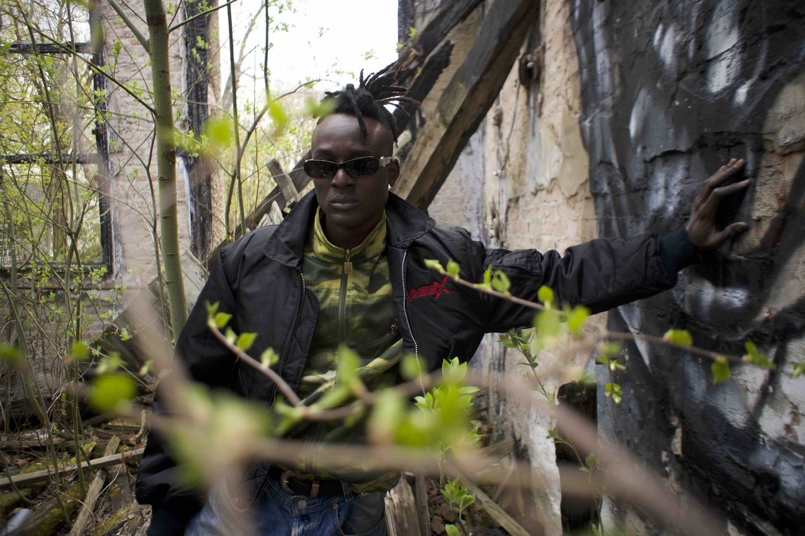
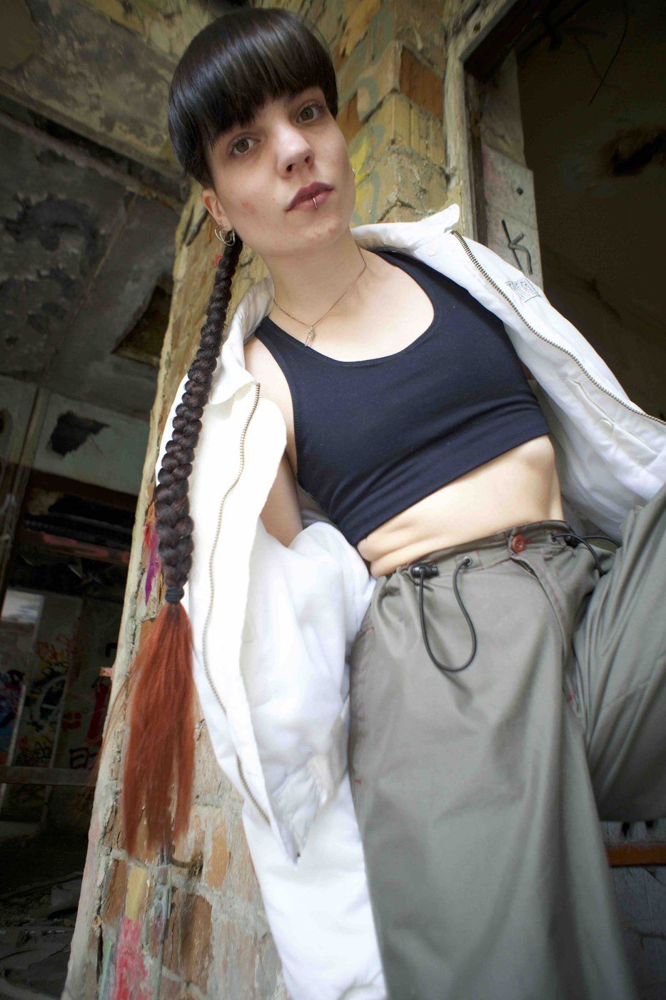
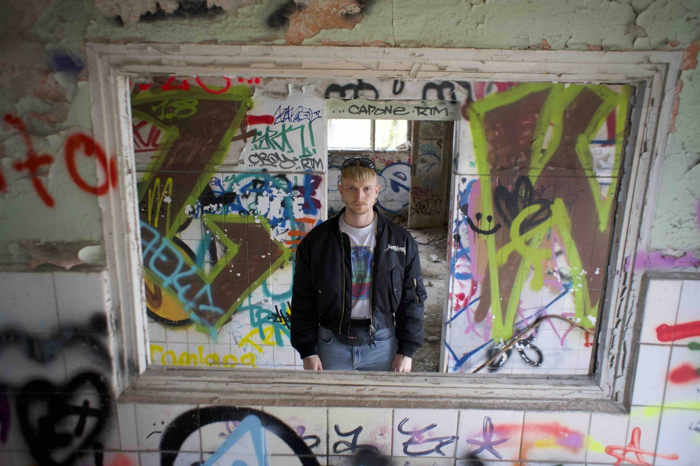
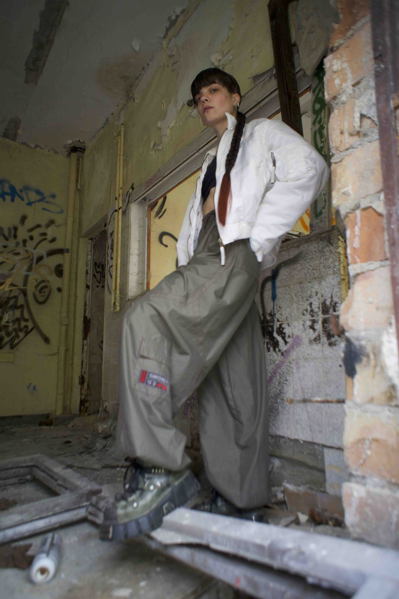
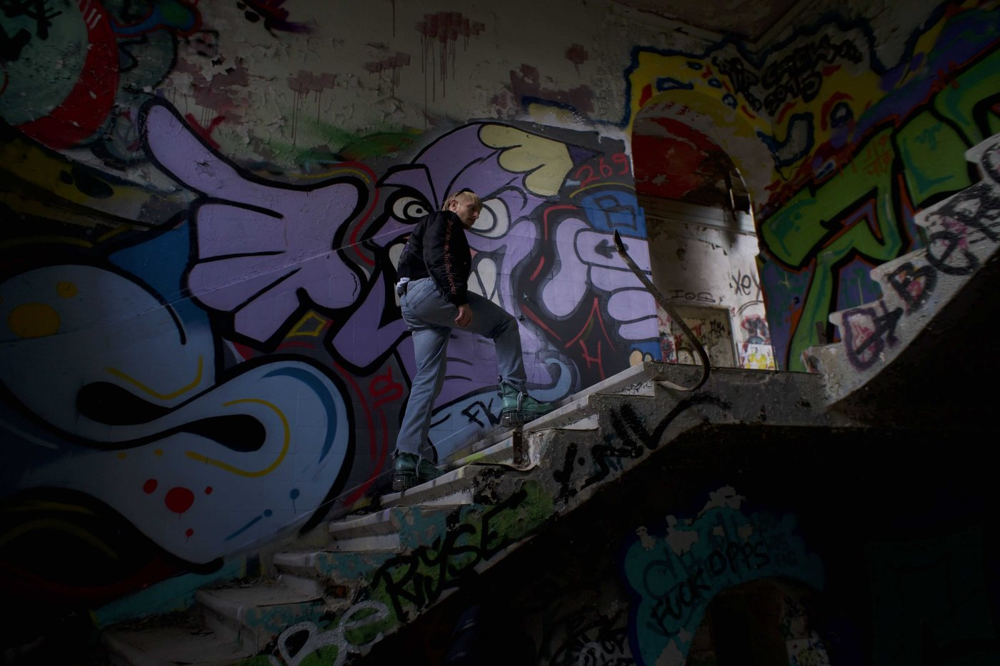
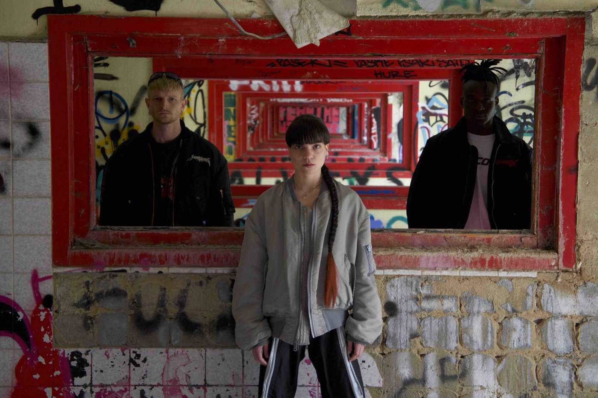
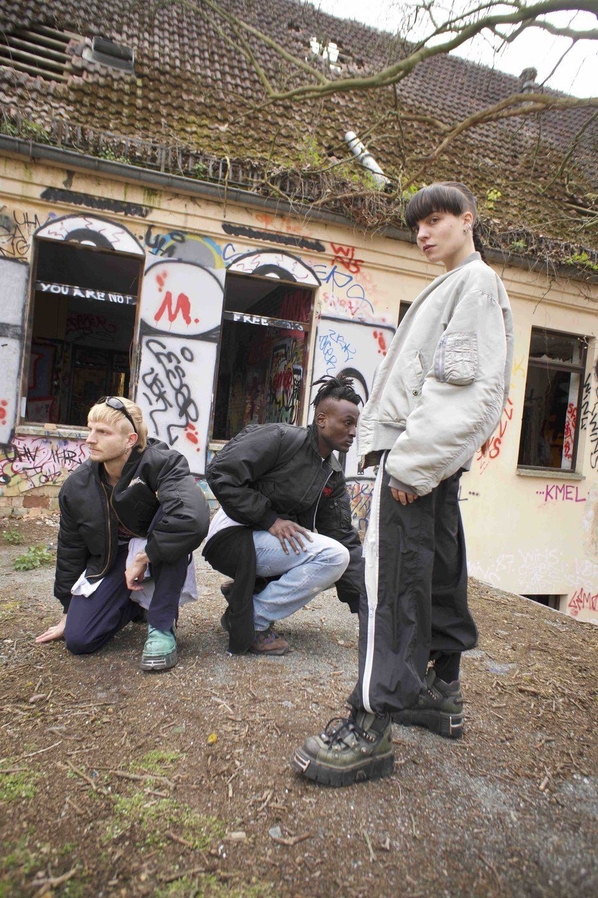
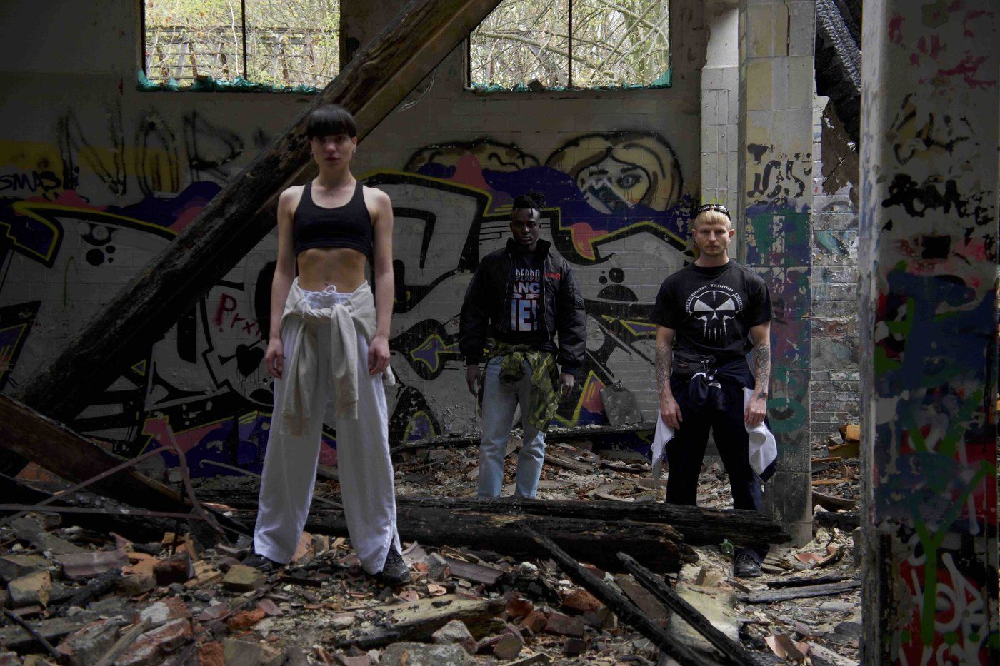
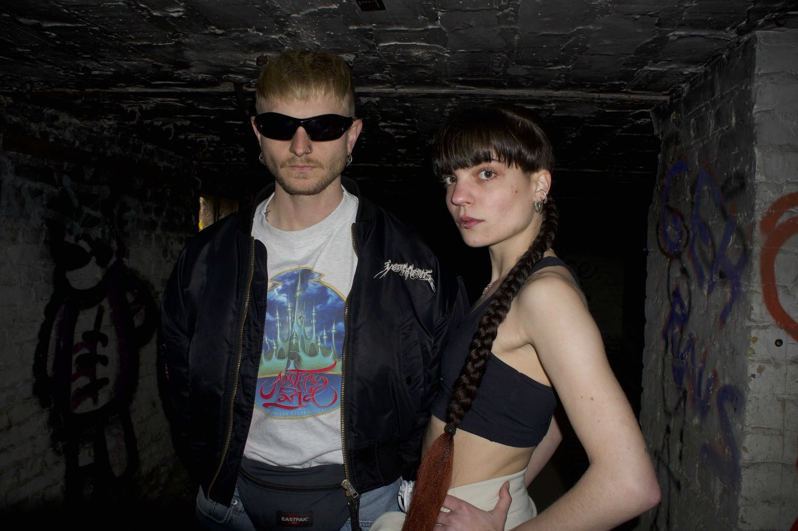
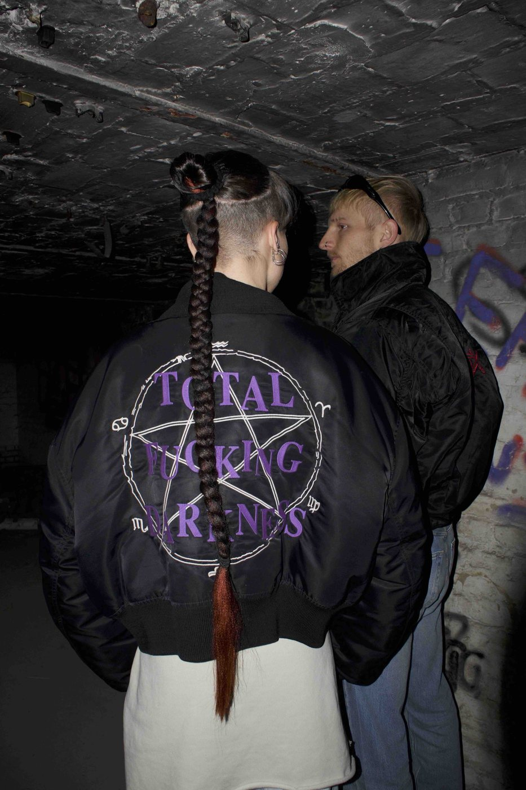

Fashion Editorial
Inner Rave
A fashion editorial shot across the ruins and graffiti of an abandoned Berlin building — channelling the revival of gabber culture in the city's young underground scene, its bomber jackets, chunky boots and rave-wear staged in raw architecture.










There's a film too. Mariana shot camera on "Berlin Gabbers", the fashion film from this series, published by KALTBLUT.
Watch the film →
Credits
- Direction & production
- Christian David Aragón
- Role
- Assistant production & camera
- Format
- Fashion editorial
- Location
- Berlin · 2023
More team credits to be added.